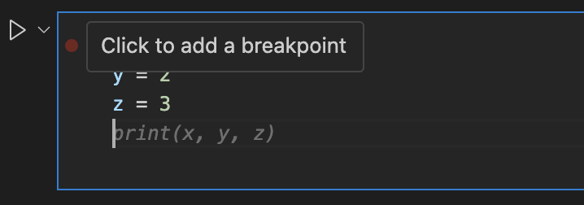
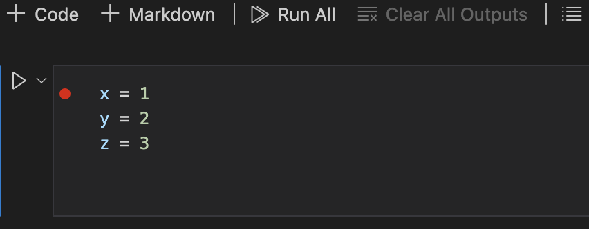
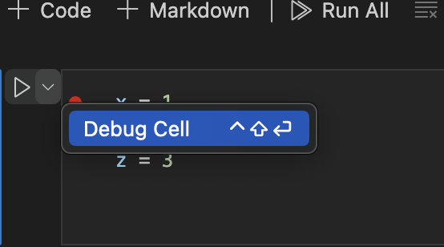
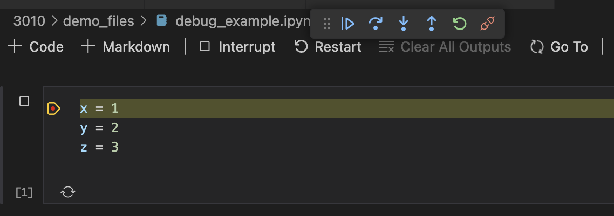
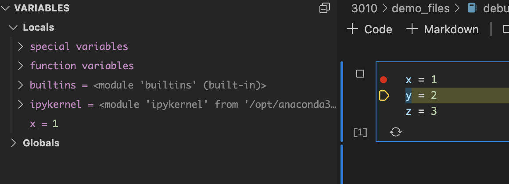
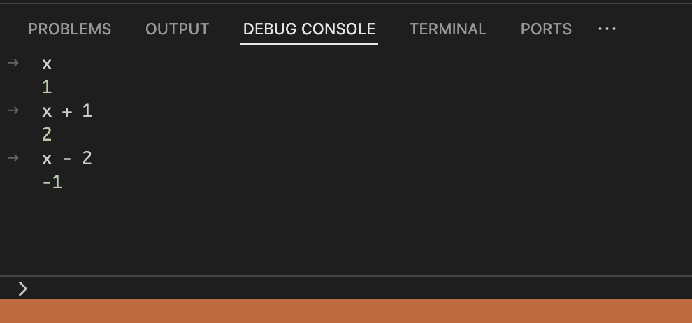

Step 1¶
Some Basic Concepts¶
What is a Computer?¶
If you think about it, you computer is a magic rock (aren't we all?)! It's a rock that can do math, remember things, and even talk to other rocks!
Your computer is composed of two main components: Hardware and Software.
The hardware is the physical parts of the computer - the things you can touch and see. This includes things like the monitor, keyboard, mouse, and the computer itself.
The software is the programs that run on the computer. This includes things like the operating system (Windows, Mac OS, Linux), web browsers, and the programs you use to do things like write documents, create spreadsheets, and play games.
In order for software to operate, it needs to know where to find the data it needs to run. This is where the file system comes in.
The file system is the way that data is stored on your computer. Think of the filing system like addresses on a street. Each file on your computer has an address, and the file system is the way that the computer knows where to find the data it needs.
To further understand the basics of the file system, we need to know what a "directory" and a "file" are.
What is a "Directory"?¶
A directory is a place where files are stored. Think of a directory like a folder on your computer (for all intents and purposes, directory == folder). A directory can contain other directories, as well as files.
Directories are important because this allows us to provide distinct and organized "addresses" for our files. Keeping files organized, particularly for programming projects, is very important for scalability, and reproducability.
Scientific Programming
File cleanliness and organization is particularly important in scientific programming. This is because we often need to share our code with others, or come back to it after a long period of time. If our code is not organized, it can be very difficult for us - or anyone else! - to understand what is going on.
What is a "File" and "File Extension"?¶
A file is a collection of data that is stored on your computer. Files can contain text, images, videos, or any other type of data. Files are stored in directories, and each file has a name that is unique within the directory.
Files can be combined to create applications - think "apps". Applications are made up of many files that work together to provide specific functions. Examples of applications include web browsers, word processors, and games.
A file extension is a series of characters that are added to the end of a file name to indicate what type of file it is. For example, a file with the extension " .txt" is a text file, while a file with the extension ".jpg" is an image file. File extensions are important because they tell the computer what type of data is in the file, and how to open it.
I'm a huge fan of the .md file extension, which is a markdown file - it's a great, non-proprietary way to write and format text.
Markdown
Markdown is a lightweight markup language that you can use to format text. It is often used to write documentation, README files, and other types of text that need to be formatted. Markdown is easy to learn, and you can use it to create headings, lists, links, and other types of formatting.
You can learn more about Markdown here.
Tools we'll be using throughout this learning path:¶
Google Colab¶
Google Colab, or "Colab Notebooks" is a completely free tool that allows you to write and execute Python code in your web browser. It is a great tool for learning Python, as it allows you to write and run code without having to install anything on your computer. It is also a great tool for sharing code with others, as you can easily share a link to your notebook with others, and they can view and run your code without having to install anything on their computer.
For a lot of the work we will be doing in our class, we will be using Google Colab. You can access Google Colab here, and assignments will often be shared with you as a link to a Google Colab notebook.
VSCode¶
Visual Studio Code (very often referred to as "VSCode") is a free code editor that is available for Windows, Mac, and Linux. It built and supported by Microsoft, and is a very powerful tool that can be customized to fit your needs. For the purposes of our class, we will most often be using Google Colab, but having VSCode installed on your machine will enable you to work on your code locally - this will be an optional path that you can take if you want to work on your code outside of Google Colab!
You can download VSCode here.
Note: You do not want to download Visual Studio, which is a different product. Make sure you are downloading Visual Studio Code (VSCode).
GitHub¶
GitHub is a website that allows you to store and share your code with others. It is a great tool for collaborating on code with others, and for sharing your code with the world.
The primary reason I'd like us to have access to GitHub - in the long term - is the integration of VSCode with their AI tool, GitHub Copilot. In my testing, I've found that GitHub Copilot is one of the best available coding AI tools out there - and as students at UC (or any other University), you have access to it for free!
Exercises¶
- Install VSCode on your computer (follow the link above in the
VSCodesection). We wont use this immediately, but we'll use it later! - Open and walk through your first Google Colab Notebook to get a taste of programming in Python!.
- In this excercise you will:
- learn how to run code in a Google Colab Notebook.
- run your first "Hello World" program using a Colab Cell.
- learn about comments and why they're important, especially for scientific programming.
- be introduced to the concept of "variables" in programming.
- In this excercise you will:
Step 2¶
In step 2, we have two objectives:
- Get familiar with the VSCode interface, including the file explorer, terminal, and editor.
- Introduce ourselves to the building blocks of Python, including environments, libraries, syntax, and programming terminology.
Exercise: Intro to VSCode¶
Visually navigating VSCode¶
Visual Studio Code (VSCode) is a powerful code editor. If you didn't install it yet, go back to Step 1 and follow the instructions.
Here's a quick overview of its main components:
- Activity Bar: Located on the far left, it lets you switch between views and gives you access to different features.
- Side Bar: Shows different views like the Explorer, Search, Source Control, etc.
- Editor: The main area where you edit your files.
- Panel: Located at the bottom, it shows output, terminal, problems, etc.
- Status Bar: Displays information about the opened project and the current file.
Open up a new terminal¶
-
Open the Terminal:
- Go to the top menu and select
Terminal > New Terminal. - In the future, you can use the shortcut that is shown near
New Terminal. Shortcuts are great! - If you toggle open the pannel (using the pannel button in the top right corner of the terminal), you can also create a new terminal from there by pushing the big
+button.
- Go to the top menu and select
-
Print your current directory path: Use the
pwdcommand to print the path of your current directory:This will show you the path to your current directory, remember this is like the "address" of where you are in your computer. When we create files and folders (new directories!) we will be doing so in this location.pwd
Code Blocks
Above, you'll notice a gray box with text inside. This is a code block. You can copy the text inside the block with the "copy" button on the far right of the box, and paste it into your terminal to run the command.
-
Get to know your directory structure in the terminal: Use the
lscommand to list the contents of your current directory:ls -
Create a new directory called
a_folder_is_a_directory: Use themkdircommand:mkdir a_folder_is_a_directorymkdirstands for "make directory" and is used to create new directories (or, "folders"). -
Create a new directory called
a_folder_is_a_directory/this_is_a_directory_within_a_directory: Use themkdircommand again:mkdir a_folder_is_a_directory/this_is_a_directory_within_a_directoryThis creates a directory within a directory, also known as a subdirectory.
-
Create a file called
test_1.mdin thethis_is_a_directory_within_a_directorydirectory: Use theNew-Itemcommand:New-Item -Name "test_1.md" -ItemType FileNew-Itemis a command that tells the computer we want to make a new file.-Nameand-ItemTypeare both parameters that you need to feed theNew-Itemcommand in order for it to work. In this case, we feed each parameter an "argument" in the space after it is presented, where "test_1.md" is the argument for the parameter-Namethat specifies the file name.By default, this will create the file in your current directory. You can add an input parameter called "
-Path" if you want to create a file in a particular location, like this: -Path"C:\Users\wirthtd\downloads"
Navigate to the a_folder_is_a_directory directory in the VSCode file explorer¶
- Open the Explorer:
You should be able to see the directory/folder structure in the file explorer on the left side of the VSCode window. If you can't see it:
-
Click on the Explorer icon in the Activity Bar (double-page icon in the top left of VSCode) or use the shortcut:
Ctrl + Shift + E(Cmd + Shift + Eon Mac). -
Navigate to the directory:
- Click on the
a_folder_is_a_directoryfolder to expand it. - Then, click on the
this_is_a_directory_within_a_directory.Note: because there is only one directory within
a_folder_is_a_directory, the two directories might appear stacked on a single line. If we added more content toa_folder_is_a_directory, it would open up in a way that appears more "normal". There are settings to change this behavior, but we won't worry about that right now.
- Click on the
Open the test_1.md file in the VSCode editor¶
- Open the file:
- Double-click on
test_1.mdto open it in the editor. - This is a markdown (
.md) file, you can learn more about markdown here
Intro to Python¶
Python is a high-level, interpreted programming language known for its readability and versatility. It's widely used in various fields, including web development, data analysis, artificial intelligence, and scientific computing.
Python Environment¶
A Python environment is a setup that includes the Python interpreter, libraries, and other tools necessary to run Python scripts. Understanding and setting up a Python environment is crucial for ensuring that your Python projects run smoothly and are well-organized.
Components of a Python Environment¶
- Python Interpreter: The core component that reads and executes Python code, telling your hardware what to do.
- Libraries and Packages: Collections of pre-written code that perform common tasks, such as NumPy for numerical operations and Pandas for data manipulation. Think of these as special-purpose tools that you can use to build your projects. We'll go over some examples of libraries further down.
- Virtual Environment: A self-contained directory that includes a specific version of Python and a set of libraries. This helps isolate projects from each other, preventing conflicts between dependencies.
Benefits of Using a Python Environment¶
- Isolation: Each project can have its own dependencies, avoiding conflicts with other projects.
- Reproducibility: Ensures that the code runs consistently across different machines.
- Organization: Keeps projects clean and manageable.
Using Python Environments on a project-to-project basis is a good practice to get into early on, and it is a critical concept in scientific software development!
Reflect: Why might this be important in scientific software development?
Python "Libraries"¶
Python has a rich ecosystem of "libraries" that extend its capabilities - this is one of the greatest advantages of Python, and is a result of it being the largest free and open source programming language in the world.
Remember, a library is a collection of pre-written code that performs common tasks. Libraries are a critical component of your Python environment.
Here are some Python Libraries that are particularly common in scientific computing:
NumPy¶
NumPy is a library for numerical computing in Python. It provides support for arrays, matrices, and many mathematical functions.
Pandas¶
Pandas is a library for data manipulation and analysis. It provides data structures like DataFrames, which are essential for handling structured data.
Matplotlib¶
Matplotlib is a plotting library for creating static, animated, and interactive visualizations in Python.
Some more basic programming terminology¶
Syntax¶
Syntax refers to the set of rules that define the structure of a programming language - in other words, syntax tells you the necessary rules for writing code.
In Python, syntax is designed to be readable and straightforward.
Variables¶
Variables are used to store data that can be referenced and manipulated in a program. You got a taste of variables in Exercise 1.
In Python, you can create a variable by assigning a value to it:
x = 10
Exercise¶
Go to this Google Colab Notebook and work through importing a Python library, and exploring some Python syntax & variables.
Bonus¶
Setting Up a Python Environment
This is a bit advanced - we'll do this together eventually, but if you want to play around with environment set up you should go ahead!!
-
Install Python: Download and install Python from the official website.
-
Create a Virtual Environment:
- Open your terminal or command prompt.
- Navigate to your project directory.
- Run
python -m venv env(whereenvis the name of your environment).
-
Activate the Virtual Environment:
- On Windows:
.\env\Scripts\activate - On macOS/Linux:
source env/bin/activate
- On Windows:
-
Install Libraries: Use
pip install <library_name>to add necessary libraries.
Example
# Create a virtual environment
python -m venv myenv
# Activate the virtual environment
source myenv/bin/activate # On macOS/Linux
.\myenv\Scripts\activate # On Windows
# Install a library
pip install numpy
Step 3¶
Getting Python Set up in VS Code¶
Note: If you haven't installed VSCode yet, go back to Step 1.
With VSCode installed, getting Python set up is fairly straight forward.
- Open VSCode
- Click on the Extensions icon on the left side of the window (it looks like a square with a few smaller squares in it)
- Search for "Python" in the search bar
- Click the green "Install" button on the Python extension by Microsoft
- Once the extension is installed, click the green "Reload" button to activate the extension
Jupyter Notebooks¶
You've already used a Jupyter Notebook without realizing it; all Google Colab Notebooks are Jupyter Notebooks! Jupyter Notebooks are a great way to write and run Python code in a more interactive way than a traditional script.
Jupyter compartments your code into "cells" that can be run independently of one another. This is great for debugging and testing code, as you can run a single cell to see if it works as expected.
There are many ways to create a new Jupyter Notebook file in VSCode, one of the easiest ways is to click File > New File and then either save the file with a .ipynb extension or Jupyter Notebook in the file type dropdown that pops up.
Note: Any time you are prompted by VSCode to install a new package or extension relating to Python or Jupyter Notebooks, you should do so. These packages and extensions are what make Python and Jupyter Notebooks work in VSCode.
Introduction to Python Data Types¶
Python has several built-in data types that are used to store different kinds of information. Here are some of the most common data types:
- Integers: Whole numbers, e.g.,
1,42,-7 - Floats: Decimal numbers, e.g.,
3.14,0.001,-2.5 - Strings: Text, e.g.,
"hello","Python","123" - Booleans: True or False values, e.g.,
True,False
Examples of Data Types¶
# Integer
a = 10
# Float
b = 3.14
# String
c = "Hello, Python!"
# Boolean
d = True
Variables in Python¶
Variables are used to store data that can be referenced and manipulated in a program. They act as containers for values.
Variable Naming Conventions¶
- Variable names must start with a letter or an underscore (
_), such as_myVarormyVar. - The rest of the name can contain letters, numbers, or underscores, examples:
myVar,my_var,myVar123. - Variable names are case-sensitive (e.g.,
myVarandmyvarare different).
Consistency is Key
When you start a project, try to pick a variable naming style and stick to that style throughout your code. This will make your code more readable and maintainable. There are a few styles commonly used in Python:
- Snake Case:
my_variable_name(recommended for Python, where all letters are lower case and spaces are replaced with underscores) - Camel Case:
myVariableName(the first word is lowercase, and the subsequent words are capitalized, no spaces. This is commonly used in JavaScript and C#) - Pascal Case:
MyVariableName(the first letter of each word is capitalized, no spaces. This is commonly used in C# and Java)
If you choose to use something other than snake case for python, that's fine! But remember to be consistent.
Assigning Values to Variables¶
You can assign values to variables using the assignment operator (=).
Examples of Variable Assignments¶
# Assigning values to variables
x = 5
y = 10.5
name = "Alice"
is_student = True
Variable Reassignment
You can reassign a variable to a different value at any time. The new value can be of the same or a different data type - be careful when reassigning variables to avoid confusion!
Type Checking¶
You can check the data type of a variable using the type() function.
# Check the data type of a variable
x = 5
print(type(x)) # Output: <class 'int'>
If you run the code snippet above, you will see that the output is <class 'int'>, indicating that the variable x is an integer.
Note: "class" here is a Python term that refers to the data type of the variable. Data classes are important, and we will learn more about them in the future.
Here are the different outputs for the different types we've covered in today's Path Step:
intfor integersfloatfor floatsstrfor stringsboolfor booleans
Try it out!
Open up a new Collab Notebook and create a variable assigment. Then, in a subsequent cell, use the type() function to check the data type of the variable. Did it work the way you thought?
Reflect¶
Why might there be different data types in programs? (Answer below)
Answer
There are a lot of reasons! But here are a few that I can come up with from the perspective of a scientific programmer:
- As scientists, we work with lots of different types of data - often at the same time. We might want to construct pipelines specifically designed for a particular data type; later on in our class we'll create functions. Some functions can be are type-specific, meaning they will only work if we supply that function with the correct data type. This is a good thing, because it means we can be sure that our functions are doing what we expect them to do.
- Different data types have different properties. For example, you can't add a string to an integer in the same way you can add two integers. This can be useful for controlling the flow of your program and ensuring that you're not doing something you didn't intend to do.
- Different properties allow you to control the flow of your program in different and nuanced ways. For example, you can use booleans to control whether or not a particular block of code is executed. This can be useful for debugging (fixing your code), or for ensuring that your code is running as expected - we will talk more about program flow in Step 5!
Review¶
In this step, we learned about different data types in Python and how to work with variables. Understanding data types and variables is essential for writing code in Python. Here's a quick recap:
- Data Types: Python has several built-in data types, including integers, floats, strings, and booleans.
- Variables: Variables are used to store data in a program. They act as containers for values.
- Variable Naming Conventions: Follow naming conventions to make your code more readable and maintainable.
- Type Checking: You can check the data type of a variable using the
type()function.
Colab Exercise¶
Now that you've learned about data types and variables, it's time to practice!
Open up this Colab Notebook and work through the exercises to reinforce your understanding.
Step 4¶
In Step 4, we will dive into operators and expressions in Python. Operators allow us to perform various operations on data, and expressions combine variables and operators to produce new values. Understanding these concepts is crucial for writing effective and efficient code.
Operators in Python¶
Python provides several types of operators that you can use to perform different operations on data. Here are the main types of operators:
Arithmetic Operators¶
Arithmetic operators are used to perform mathematical operations.
- Addition (
+): Adds two numbers. - Subtraction (
-): Subtracts the second number from the first. - Multiplication (
*): Multiplies two numbers. - Division (
/): Divides the first number by the second. - Modulus (
%): Returns the remainder of the division. - Exponentiation (
**): Raises the first number to the power of the second.
Examples of Arithmetic Operators¶
You can run any of these examples in an
.ipynbinside of VSCode, or in a Colab notebook.
What's an .ipynb?
An .ipynb file is a "Jupyter Notebook" file that allows you to run Python code in a cell-by-cell format. You've already been working with these in Google Colab! You can create a new .ipynb file in VSCode by clicking on the New File button in the file explorer and selecting Python 3 as the kernel. If you want to try this out, go for it! Ask a chatbot or your professor if you get confused.
# Addition
result = 5 + 3
print("5 + 3 =", result)
# Subtraction
result = 10 - 4
print("10 - 4 =", result)
# Multiplication
result = 7 * 2
print("7 * 2 =", result)
# Division
result = 15 / 3
print("15 / 3 =", result)
# Modulus
result = 10 % 3
print("10 % 3 =", result)
# Exponentiation
result = 2 ** 3
print("2 ** 3 =", result)
Comparison Operators¶
Comparison operators are used to compare two values and return a boolean result (True or False).
- Equal to (
==): Checks if two values are equal. - Not equal to (
!=): Checks if two values are not equal. - Greater than (
>): Checks if the first value is greater than the second. - Less than (
<): Checks if the first value is less than the second. - Greater than or equal to (
>=): Checks if the first value is greater than or equal to the second. - Less than or equal to (
<=): Checks if the first value is less than or equal to the second.
Examples of Comparison Operators¶
You can run any of these examples in an
.ipynbinside of VSCode, or in a Colab notebook.
# Equal to
print(5 == 5) # True
# Not equal to
print(5 != 3) # True
# Greater than
print(7 > 4) # True
# Less than
print(3 < 8) # True
# Greater than or equal to
print(6 >= 6) # True
# Less than or equal to
print(2 <= 5) # True
Logical Operators¶
Logical operators are used to combine conditional statements.
- AND (
and): ReturnsTrueif both statements are true. - OR (
or): ReturnsTrueif at least one statement is true. - NOT (
not): Reverses the result, returnsFalseif the result is true.
Examples of Logical Operators¶
You can run any of these examples in an
.ipynbinside of VSCode, or in a Colab notebook.
# AND
print(True and True) # True
print(True and False) # False
# OR
print(True or False) # True
print(False or False) # False
# NOT
print(not True) # False
print(not False) # True
Expressions in Python¶
Expressions are combinations of variables, operators, and values that produce a result. They are the building blocks of any Python program.
Combining Variables and Operators¶
You can combine variables and operators to create expressions. Here are some examples:
You can run any of these examples in an
.ipynbinside of VSCode, or in a Colab notebook.
# Arithmetic expression
x = 5
y = 3
result = x + y
print("x + y =", result)
# Comparison expression
is_greater = x > y
print("x > y:", is_greater)
# Logical expression
is_true = (x > y) and (y > 0)
print("(x > y) and (y > 0):", is_true)
Exercise: Working with Operators and Expressions¶
Now it's time to practice using operators and creating expressions. You can do this your own Colab Notebook, in an .ipynb file in VSCode, or in a Python file in VSCode (we haven't done this last one yet - if you'd like to try,ask a chatbot or your professor!).
Try the following exercises:
Exercise 1: Arithmetic Operators¶
Write a Python program that performs the following operations and prints the results:
- Add two numbers.
- Subtract one number from another.
- Multiply two numbers.
- Divide one number by another.
- Find the remainder of the division of two numbers.
- Raise one number to the power of another.
Exercise 2: Comparison Operators¶
Write a Python program that compares two numbers using each of the comparison operators and prints the results.
Exercise 3: Logical Operators¶
Write a Python program that uses logical operators to combine multiple conditions and prints the results.
Exercise 4: Creating Expressions¶
Write a Python program that combines variables and operators to create expressions. Use arithmetic, comparison, and logical operators in your expressions.
Reflect¶
Think about the different types of operators and expressions you've learned. How might you use them in your own programs? What are some real-world scenarios where these concepts might be useful?
Review¶
In this step, we learned about different types of operators and expressions in Python. Here's a quick recap:
- Arithmetic Operators: Used to perform mathematical operations.
- Comparison Operators: Used to compare two values and return a boolean result.
- Logical Operators: Used to combine conditional statements.
- Expressions: Combinations of variables, operators, and values that produce a result.
Understanding these concepts is essential for writing effective and efficient code in Python.
Step 5¶
In Step 5, we will explore control structures in Python, specifically focusing on making decisions using conditional statements. Control structures allow us to control the flow of our programs, making them more dynamic and responsive to different inputs and conditions.
Write as you Go
As you work through this step, try writing code snippets in your own Notebook either in VSCode or Google Colab. This will help you practice and reinforce what you're learning.
Indentations in Python¶
Indentation is a crucial aspect of Python syntax. Unlike many other programming languages that use braces {} to define code blocks, Python uses indentation to determine the grouping of statements. This means that the level of indentation (spaces or tabs) is used to define the structure and flow of your code.
How to make an indentation?
In VSCode and Google Colab, you can create an indentation by pressing the Tab key on your keyboard. You can also use the Shift + Tab key to remove/reverse an indentation.
Weirdly, in Python, the "prefered" way to indent is to use 4 spaces. This is because it is easier to read and is more consistent across different editors and platforms - because typically, when you press Tab, it creates a character \t. HOWEVER, most IDEs like VSCode will automatically convert tabs to 4 spaces for you - for the purposes of this class, you should be fine to use the Tab key.
Why Indentation Matters¶
Indentation is not just for readability; it is a fundamental part of Python's syntax (remember, "syntax" is a way of saying "the way the program is written to be understood by the machine"). Incorrect indentation can lead to syntax errors or unexpected behavior in your code.
Rules for Indentation¶
- Consistent Indentation: Use the same number of spaces or tabs for each level of indentation. Mixing spaces and tabs can cause errors. Most
- Standard Practice: The standard practice is to use 4 spaces for each level of indentation. Most Python editors and IDEs (like VSCode) are configured to use 4 spaces by default.
- Indentation Levels: Each level of indentation represents a new block of code. For example, the code inside an
ifstatement or a loop must be indented.
Example¶
We will learn about if statements in the next section below, but here's an example to illustrate the importance of indentation. This might make more sense after you learn what an if statement is, but for now think of an if statement as a way to check if a condition is true or false.
x = 10
if x > 5:
print("x is greater than 5")
if x > 8:
print("x is also greater than 8")
print("This line is outside the if statement")
In this example:
- The first
printstatement is indented once, so it is part of theif x > 5block. - The second
printstatement is indented twice, so it is part of theif x > 8block, which is nested inside the firstifblock. - The final
printstatement is not indented, so it is outside of theifblock and will always be executed.
So, remember to pay attention to your indentation when writing Python code! It changes the way the code will be executed. Now, onto more fun things!
Conditional Statements¶
Conditional statements are used to perform different actions based on different conditions. The most common conditional statements in Python are if, elif, and else.
The if Statement¶
The if statement is used to test a condition. If the condition is true, the code block inside the if statement is executed.
Recall: Boolean Operators
Remember that conditional statements rely on boolean expressions to determine whether a condition is true or false. We went over boolean operators in Step 4, but here's a quick refresher:
A boolean expression is an expression that evaluates to either True or False. We can make the variable condition in the if statement is a boolean expression by setting it equal to to either True or False before we run the code. You can experiment with this in your own Notebook, printing out a value within the conditional statement to see how it changes.
Syntax¶
if condition:
# code block to be executed if the condition is true
Example¶
x = 10
if x > 5:
print("x is greater than 5")
The elif Statement¶
The elif statement is short for "else if". It allows us to check multiple conditions.
Syntax¶
if condition1:
# code block to be executed if condition1 is true
elif condition2:
# code block to be executed if condition2 is true
Example¶
x = 10
if x > 15:
print("x is greater than 15")
elif x > 5:
print("x is greater than 5 but less than or equal to 15")
The else Statement¶
The else statement catches anything that isn't caught by the preceding conditions.
Syntax¶
if condition1:
# code block to be executed if condition1 is true
elif condition2:
# code block to be executed if condition2 is true
else:
# code block to be executed if none of the conditions are true
Example¶
x = 10
if x > 15:
print("x is greater than 15")
elif x > 5:
print("x is greater than 5 but less than or equal to 15")
else:
print("x is 5 or less")
Play with it!
In a notebook, copy and paste the code above. Then try changing the value of x in the example above to see how the output changes based on the conditions.
Exercise: Making Decisions with Conditional Statements¶
Now it's time to practice using conditional statements. You can do this in your own Colab Notebook, in an .ipynb file in VSCode, or in a Python file in VSCode.
Exercise 1: Basic if Statement¶
Write a Python program that checks if a number is positive, negative, or zero and prints the result.
Solution
Here's a simple solution to the basic if statement problem:
x = 10
if x > 0:
print("x is positive")
elif x < 0:
print("x is negative")
else:
print("x is zero")
Exercise 2: Using elif and else¶
Write a Python program that checks the grade of a student based on their score and prints the corresponding grade (A, B, C, D, or F).
Solution
Here's a simple solution to the grade-checking problem:
score = 85
if score >= 90:
print("A")
elif score >= 80:
print("B")
elif score >= 70:
print("C")
elif score >= 60:
print("D")
else:
print("F")
Reflect¶
Think about how conditional statements can be used to control the flow of a program. What are some real-world scenarios where these concepts might be useful?
Sorting Data
Conditional statements can be used to sort data, filter out unwanted information, or make decisions based on specific criteria. For example, you might use conditional statements to categorize products based on their price, filter out invalid user inputs, or determine the eligibility of a customer for a discount.
Review¶
In this step, we learned about conditional statements in Python. Here's a quick recap:
ifStatement: Used to test a condition and execute a code block if the condition is true.elifStatement: Allows us to check multiple conditions.elseStatement: Catches anything that isn't caught by the preceding conditions.
Understanding these concepts is essential for writing dynamic and responsive programs in Python.
Step 6¶
In Step 6, we will focus on problem-solving using control structures. This step will build on the concepts of conditional statements and introduce loops, which are essential for creating dynamic and efficient programs.
Problem-Solving with Control Structures¶
Control structures allow us to control the flow of our programs, making them more dynamic and responsive to different inputs and conditions. In this step, we will explore how to use control structures to solve problems.
Loops in Python¶
Loops are used to execute a block of code repeatedly. Python provides two types of loops: for loops and while loops.
The for Loop¶
The for loop is used to iterate over a sequence of numbers and execute a block of code for each number.
lists in Python
A list is a collection of items that can be of different types. You can create a list by placing the items inside square brackets [], separated by commas. For example:
numbers_list = [1, 2, 3, 4, 5]
Lists are iterable, meaning you can loop over the items in a list using a for loop. Python makes great use of lists and other iterable objects to simplify programming tasks!
Syntax¶
numbers_list = [1, 2, 3, 4, 5]
for number in numbers_list:
# code block to be executed for each number in the list
Example¶
numbers_list = [1, 2, 3, 4, 5]
for number in numbers_list:
print(number)
The range() Function
The range() function is commonly used with for loops to generate a sequence of numbers. It takes three arguments: start, stop, and step. For example, range(1, 6, 2) generates the sequence 1, 3, 5.
You can also use range() with a single argument to generate a sequence starting from 0. For example, range(5) generates the sequence 0, 1, 2, 3, 4.
You can use the range() function to iterate over a specific range of numbers in a for loop, like this:
for i in range(1, 6):
print(i)
Another Example¶
Just like you can loop over a list of numbers, you can loop over a string in Python. When you feed in a string to a for loop, it will iterate over each character in the string.
for character in "This will print vertically":
print(character)
The while Loop¶
The while loop is used to execute a block of code as long as a condition is true.
Syntax¶
while condition:
# code block to be executed as long as the condition is true
Example¶
count = 0
while count < 3:
print(count)
count += 1
The += Operator
The += operator is used to increment (add) the value of a variable. This is a shorter way to write
variable = variable + 1
-= can be used to decrement (subtract) the value of a variable, as well as *=, /=, and **= for multiplication, division, and exponentiation, respectively.
Combining Loops and Conditional Statements¶
You can combine loops and conditional statements to create more complex control structures.
Example¶
numbers_list = [1, 2, 3, 4, 5, 6, 7, 8, 9, 10]
for i in numbers_list:
if i % 2 == 0:
print(f"{i} is even")
else:
print(f"{i} is odd")
Exercise: Problem-Solving with Control Structures¶
Now it's time to practice using loops and conditional statements to solve problems. You can do this in your own Colab Notebook, in an .ipynb file in VSCode, or in a Python file in VSCode.
Exercise 1: Simple Loops¶
Write a Python program that prints the numbers from 1 to 5 using a for loop, then do it again for a while loop.
Solution
Here's a simple solution to the simple loops problem:
# Using a for loop
numbers_list = [1, 2, 3, 4, 5]
for i in numbers_list:
print(i)
# Using a while loop
count = 1
while count < 6:
print(count)
count += 1
Exercise 2: Sum of Numbers¶
Write a Python program that calculates the sum of numbers from 1 to 10.
Hint
You can use a for loop combined with the range() function to iterate over the numbers from 1 to 10 and calculate the sum. You could also implement the += operator to increment the sum for each number.
Solution
Here's a simple solution to the sum of numbers problem:
total = 0
for i in range(1, 11):
total += i
print(f"The sum of numbers from 1 to 10 is: {total}")
Exercise 3: FizzBuzz¶
Write a Python program that prints the numbers from 1 to 20. For multiples of three, print "Fizz" instead of the number, and for the multiples of five, print "Buzz". For numbers which are multiples of both three and five, print "FizzBuzz".
Solution
Here's a simple solution to the FizzBuzz problem:
for i in range(1, 21):
if i % 3 == 0 and i % 5 == 0:
print("FizzBuzz")
elif i % 3 == 0:
print("Fizz")
elif i % 5 == 0:
print("Buzz")
else:
print(i)
Exercise 4: Counting Vowels¶
Write a Python program that counts the number of vowels in a given string.
Hint
You can use a for loop to iterate over each character in the string and a conditional statement to check if the character is a vowel.
Solution
Here is one solution to the problem:
string = "This is a sample string"
vowels = "aeiouAEIOU"
count = 0
for char in string:
if char in vowels:
count += 1
print(f"The number of vowels in the string is: {count}")
Exercise 5: Reverse a String¶
Write a Python program that reverses a given string using a for loop.
Hint
You can use a for loop to iterate over the string in reverse order and build a new string.
Solution
Here's a possible solution:
string = "Hello, World!"
reversed_string = ""
for char in string:
reversed_string = char + reversed_string
print(f"The reversed string is: {reversed_string}")
Think: Why does this solution work?
Exercise 6: Multiplication Table with F-Strings¶
Write a Python program that generates a multiplication table for numbers 1-5, using f-strings.
Hint
You can use nested for loops to generate the multiplication table for numbers 1-5.
Solution
Here's a possible solution:
for i in range(1, 6):
for j in range(1, 6):
print(f"{i} x {j} = {i * j}") # Print a new line after each row
This solution uses nested for loops to generate the multiplication table for numbers 1-5. The outer loop iterates over the numbers 1-5 for the first multiplier, and the inner loop iterates over the numbers 1-5 again for the second number, generating a table of all multiplication results.
Reflect¶
Think about how loops and conditional statements can be used to solve problems. What are some real-world scenarios where these concepts might be useful?
Automating Repetitive Tasks
Loops and conditional statements are essential for automating repetitive tasks and handling different conditions in programs. For example, you can use loops to process large datasets, iterate over files in a directory, or perform calculations based on specific conditions. Conditional statements can be used to control the flow of a program, handle user inputs, or make decisions based on certain criteria.
Another tool, functions, can also be used to automate repetitive tasks. We'll learn about functions in the next step!
Review¶
In this step, we learned about loops and how to use them in combination with conditional statements to solve problems. Here's a quick recap:
forLoop: Used to iterate over a sequence of numbers and execute a block of code for each number.whileLoop: Used to execute a block of code as long as a condition is true.- Combining Loops and Conditional Statements: Allows for more complex control structures and problem-solving.
Understanding these concepts is essential for writing dynamic and efficient programs in Python.
Step 7¶
In Step 7, we will explore functions in Python. Functions are reusable blocks of code that perform a specific task. They help us organize our code, make it more readable, and avoid repetition.
Defining Functions¶
To define a function in Python, we use the def keyword (short for "define") followed by the function name and parentheses ().
Inside the parentheses, we can specify parameters, or "inputs", that the function can accept. The function body is indented and contains the code that will be executed when the function is called.
Syntax¶
def function_name(parameters):
# code block to be executed
Example¶
def greet(name):
print(f"Hello, {name}!")
In this example, greet is the function name, and name is a parameter. The function prints a greeting message using the provided name.
Calling Functions¶
To call a function, we use the function name followed by parentheses (). If the function accepts parameters, we pass the arguments inside the parentheses.
Example¶
greet("Alice")
This will output:
Hello, Alice!
Return Statement¶
Functions can return a value using the return statement. This allows us to capture the result of a function and use it in other parts of our code.
Example¶
def add(a, b):
return a + b
result = add(3, 5)
print(result)
This will output:
8
Default Parameters¶
We can define default values for parameters in a function. If an argument is not provided when the function is called, the default value will be used.
Example¶
def greet(name="World"):
print(f"Hello, {name}!")
greet()
This will output:
Hello, World!
by default, the function uses "World" as the name. If we call the function without providing a name, it will use the default value, like this:
def greet(name="World"):
print(f"Hello, {name}!")
greet("Alice")
This will output:
Hello, Alice!
Try it yourself!
Keyword Arguments¶
We can more flexibly use functions by telling the function what we want to use as input when we call that function.
Let's imagine a scenario where we have a "describe_pet" function that takes two parameters: "animal_type" and "pet_name", the function might look like this:
def describe_pet(animal_type, pet_name):
print(f"I have a {animal_type} named {pet_name}.")
We can specify the inputs, or "arguments", when we call the function by setting them equal to the parameter names.
Parameters & Arguments
The parameter is the name we give to the input in the function definition, and the argument is the actual value we pass to the function.
Here is an example of specifying that I have a dog named Rufus:
describe_pet(animal_type="dog", pet_name="Rufus")
Note that when I specify the arguments (inputs), I can change the order and the function will work just fine:
describe_pet(pet_name="Django", animal_type="dog")
So, in the code below, I can define the function and use the function twice in a row, changing the order of the arguments:
def describe_pet(animal_type, pet_name):
print(f"I have a {animal_type} named {pet_name}.")
describe_pet(animal_type="dog", pet_name="Sherlock")
describe_pet(pet_name="Watson", animal_type="cat")
This will output:
I have a dog named Sherlock. I have a cat named Watson.
Exercises¶
-
Define a Function: Write a function called
squarethat takes a number as a parameter and returns its square.Solution
def square(number): return number * number result = square(5) print(result) -
Call a Function: Write a function called
multiplythat takes two numbers as parameters and returns their product. Call the function with different arguments and print the results.Solution
def multiply(a, b): return a * b result1 = multiply(3, 4) result2 = multiply(5, 2) print(result1) print(result2) -
Default Parameters: Write a function called
greet_userthat takes a name as a parameter and prints a greeting message. If no name is provided, it should use "User" as the default name.Solution
def greet_user(name="User"): print(f"Hello, {name}!") greet_user("Alice") greet_user() -
Keyword Arguments: Write a function called
make_sandwichthat takes a list of ingredients and prints a message describing the sandwich. Call the function using keyword arguments to specify the ingredients in different orders.Solution
def make_sandwich(ingredients): print("Sandwich with:") for ingredient in ingredients: print(f"- {ingredient}") make_sandwich(ingredients=["bread", "cheese", "tomato"]) make_sandwich(ingredients=["tomato", "bread", "cheese"])
Reflect¶
Think about how functions can help you organize your code and make it more reusable. What are some real-world scenarios where you might use functions?
Review¶
In this step, we learned about functions in Python. Here's a quick recap:
- Defining Functions: Use the
defkeyword to define a function. - Calling Functions: Use the function name followed by parentheses to call a function.
- Return Statement: Use the
returnstatement to return a value from a function. - Default Parameters: Define default values for parameters in a function.
- Keyword Arguments: Specify arguments using parameter names when calling a function.
Understanding these concepts is essential for writing organized and reusable code in Python.
Step 8¶
In Step 8, we will reinforce our understanding of functions by combining them with loops, conditionals, and type hints. This step will provide opportunities to practice and see how these concepts work together.
Simple Function¶
Let's start with a simple function that adds two numbers.
def add(a, b):
return a + b
result = add(3, 5)
print(result)
In this example, add is a function that takes two parameters a and b, and returns their sum.
Using a Function in a Loop¶
Now, let's see how we can use this function in a loop to add numbers from a list.
def add(a, b):
return a + b
numbers = [1, 2, 3, 4, 5]
total = 0
for number in numbers:
total = add(total, number)
print(total)
In this example, we use the add function in a for loop to sum all the numbers in the list.
Functions with Various Data Types¶
Functions can work with different data types and return various outputs. Let's see some examples.
Example 1: Concatenating Strings¶
def concatenate(str1, str2):
return str1 + " " + str2
result = concatenate("Hello", "World")
print(result)
Example 2: Checking Even or Odd¶
def is_even(number):
if number == 0:
return False # Zero is not considered even or odd, it is an "edge case"
# so we'll take care of it first.
else:
return number % 2 == 0 # Now that zero is taken care of,
# this will work fine.
result = is_even(4)
print(result)
Example 3: Finding the Maximum Value¶
def find_max(a, b):
if a > b:
return a
else:
return b
result = find_max(10, 20)
print(result)
Introducing Type Hints¶
Type hints allow you to specify the expected data types of function parameters and return values. They do not enforce the types but provide useful information for code readability.
Syntax¶
Below is a template for how a functino with type hints would work, note, these are not real types:
def function_name(parameter: type) -> return_type:
# code block
Why Type Hints are Important
Type hints improve code readability and help others understand what types of arguments a function expects and what it returns. They also assist in catching type-related errors during development.
Note, we are not changing anything about the function here. All we're doing is being more communicative about how the function should be used.
Below are some examples of functions with type hints.
Example 1: Adding Integers¶
def add(a: int, b: int) -> int:
return a + b
result = add(3, 5)
print(result)
This function is pretty simple, it takes two integers, adds them together, and returns an integer.
Example 2: Concatenating Strings¶
def concatenate(str1: str, str2: str) -> str:
return str1 + " " + str2
result = concatenate("Hello", "World")
print(result)
"Concatenate" means to join two things together. In this case, two strings.
This function takes two strings and returns a new string that is the concatenation of the two input strings.
String Concatenation
You can follow this link to see more about string concatenation in Python.
Example 3: Checking Even or Odd¶
def is_even(number: int) -> bool:
if number == 0:
return False
else:
return number % 2 == 0
result = is_even(4)
print(result)
What when we feed a function the wrong type?¶
def add(a: int, b: int) -> int:
return a + b
result = add("3", 5) # This will produce an error...
This will raise a TypeError because we are trying to add a string and an integer, which is not allowed based on the type hints. In this case, it will also functionally break the code.
The type error will look like this:
TypeError: can only concatenate str (not "int") to str
Note, if you fed the add() function a float, even though it breaks the Type Hint, the code will still run. This is because Python is a "dynamically typed language", and it will try to do the operation you're asking it to do and only break if it can't.
So, Type Hints are not a "hard rule" in Python, but they are a great idea to follow because code is read more often than it is written.
Using a Loop within a Function¶
You can use loops within functions to perform repetitive tasks.
Example: Summing Numbers¶
def sum_numbers(n: int) -> int:
total = 0
for i in range(1, n + 1):
total += i
return total
result = sum_numbers(10)
print(result)
The example above takes in an integer n and returns the sum of all numbers from 1 to n. It uses the range function to generate a sequence of numbers from 1 to n - remember that range doesn't include the last number, so we add 1 to n + 1 so that we include n in the sum.
Combining Functions with Conditionals¶
You can combine functions with conditionals to perform different actions based on conditions.
Example: Filtering Even Numbers¶
NOTE: For the function below,
is_evenis a function that we defined earlier in this document. That means if you've run theis_evenfunction in your.ipynbalready, then this code will work just fine. If you haven't, you'll need to run the code block containingis_evenfunction before you run this code.
def filter_even(numbers: list[int]) -> list[int]:
even_numbers = []
for number in numbers:
if is_even(number):
even_numbers.append(number)
return even_numbers
numbers = [1, 2, 3, 4, 5, 6, 7, 8, 9, 10]
result = filter_even(numbers)
print(result)
This above function is great! It contains a loop that iterates over a list of numbers and uses the is_even function to check if each number is even. If the number is even (here, we use a conditional!), it is added to a new list called even_numbers, which is then returned.
This function combines a lot of what we've learned so far!
Review¶
In this step, we reinforced our understanding of functions by exploring:
- Simple Function: Creating and using a basic function.
- Using a Function in a Loop: Applying a function within a loop.
- Functions with Various Data Types: Working with different data types and return values.
- Introducing Type Hints: Specifying expected data types for function parameters and return values.
- Using a Loop within a Function: Performing repetitive tasks within a function.
- Combining Functions with Conditionals: Using conditionals within functions to perform different actions.
Understanding these concepts is essential for writing robust and flexible code in Python.
Exercises¶
Rememeber: The solutions I provide are only one way to solve the problem. There are many ways to solve most coding problems! You should feel free to experiment and try different approaches.
-
Type Hints: Write a function called
concatthat takes two strings as parameters and returns their concatenation. Use type hints to specify the parameter and return types.Solution
def concat(str1: str, str2: str) -> str: return str1 + " " + str2 result = concat("Hello", "World") print(result) -
Sum of Squares: Write a function called
sum_of_squaresthat takes an integernand returns the sum of the squares of all numbers from 1 ton.Solution
def sum_of_squares(n: int) -> int: total = 0 for i in range(1, n + 1): total += i ** 2 return total result = sum_of_squares(5) print(result) -
Count Vowels: Write a function called
count_vowelsthat takes a string as a parameter and returns the number of vowels in the string. Use a loop to iterate over the string and count the vowels.Solution
def count_vowels(s: str) -> int: vowels = "aeiouAEIOU" count = 0 for char in s: if char in vowels: count += 1 return count result = count_vowels("Hello, World!") print(result) -
Find Minimum: Write a function called
find_minthat takes a list of integers and returns the smallest number in the list. Use a loop to iterate over the list and find the minimum value.Solution
def find_min(numbers: list[int]) -> int: min_number = numbers[0] for number in numbers: if number < min_number: min_number = number return min_number numbers = [5, 3, 8, 1, 9, 2] result = find_min(numbers) print(result) -
Palindrome Check: Write a function called
is_palindromethat takes a string and returnsTrueif the string is a palindrome (reads the same forwards and backwards) andFalseotherwise. Use a loop to check the characters.Solution
def is_palindrome(input_string: str) -> bool: input_string = input_string.lower() # This line makes it so we don't have to worry about capital letters. reversed_input_string = input_string[::-1] return input_string == reversed_input_string result1 = is_palindrome("radar") result2 = is_palindrome("hello") print(result1) print(result2)
Bonus: Lambda Functions (One-Line Functions)¶
Lambda functions are small functions defined using the lambda keyword. They are often used for short, simple operations.
These are called "anonymous functions" because they don't have a name, we don't define ("def") them. They are useful when you need a simple function for a short period of time.
Syntax¶
Note, the text below is a template, not real code:
lambda parameters: expression
Example: Squaring a Number¶
square = lambda x: x * x
print(square(5))
Example: Using Lambda with filter¶
numbers = [1, 2, 3, 4, 5, 6, 7, 8, 9, 10]
even_numbers = list(filter(lambda x: x % 2 == 0, numbers))
print(even_numbers)
Bonus Excercise: Using Lambda Functions¶
-
Filtering Odd Numbers: Use a lambda function with the
filterfunction to filter out odd numbers from a list of integers.Solution
numbers = [1, 2, 3, 4, 5, 6, 7, 8, 9, 10] odd_numbers = list(filter(lambda x: x % 2 != 0, numbers)) print(odd_numbers) -
Adding "1": With a super simple lambda function, add 1 to a number.
Solution
add_one = lambda x: x + 1 print(add_one(5))
Step 9¶
In Step 9, we will focus on debugging Python code using Visual Studio Code (VSCode) and Jupyter Notebooks (.ipynb files). Debugging is an essential skill for any programmer, as it helps identify and fix errors in the code.
Note: This is the kind of thing that it really helps to watch someone demonstrate what debugging looks like. I've done my best to include images, but attending class and asking questions is uniquely important for this Step.
Introduction to Debugging¶
Debugging is the process of finding and fixing errors or "bugs" in your code. Bugs can be syntax errors, runtime errors, or logical errors. Understanding how to debug effectively will save you time and frustration.
Why "bug"?
The term "bug" originated in the early days of computing when an actual insect (a moth) caused a malfunction in a computer. Since then, the term has been used to describe any unexpected behavior in software.
Types of Errors¶
- Syntax Errors: These occur when the code is not written correctly according to the language's rules. For example, missing a colon at the end of an
ifstatement (Trent does this all the time...). - Runtime Errors: These occur when the code is executed and something goes wrong, such as dividing by zero.
- Logical Errors: These occur when the code runs without crashing - in other words, telling you that something is wrong - but produces incorrect results. These are often the hardest to find.
Debugging in VSCode¶
VSCode provides powerful tools for debugging Python code, including support for Jupyter Notebooks. Here are the steps to debug a .ipynb file in VSCode.
Setting Up the Debugger¶
- Open VSCode: Make sure you have VSCode installed and open it.
- Install Python Extension: If you haven't already, install the Python extension for VSCode.
- Open Your Notebook: Open the
.ipynbfile you want to debug.
Using Breakpoints¶
Breakpoints allow you to pause the execution of your code at specific lines, so you can inspect the state of your program.
-
Set a Breakpoint: Click in the gutter (the space to the left of the line numbers) next to the line where you want to set a breakpoint. A red dot will appear.
-
The "Gutter" is the region to the left of the line numbers in the editor.

-
Hover your mouse over the gutter to see the breakpoint icon. 
-
Click the dimmed breakpoint icon to set a breakpoint. 
-
Click the down arrow near the play button for the cell, and you will see the option to "Debug Cell" 
-
When you see the line highlighted in yellow, you have successfully set a breakpoint and you're now in debug mode! 
-
-
Start Debugging: Now, you can walk through your code line by line. You can use the buttons in the debug toolbar to continue, step into, over, out, restart, or disconnect the debugger (symbols from left to right in image above).
- The "Continue" button will run the code until the next breakpoint.
- The "Step Over" button will run the next line of code.
- The "Step Into" button will go into the next function call.
- The "Step Out" button will run until the current function returns.
- The "Restart" button will restart the debugger.
- The "Disconnect" button will stop the debugger.
-
Inspect Variables: When the code execution pauses at a breakpoint, you can hover over variables to see their current values or use the Variables pane to inspect them.
- To the left of the notebook, you will see the "Variables" tab. Click on it to see the variables in the current scope.
-
Note: in a Jupyter Notebook, the first time you run through the cell, your variables wont be identified yet, but they will be after the first run through. This means that if your code relies on a variable that is defined in a specific sequence, you'll need to restart the kernel and run the cell again. 
-
You can also check variables and test code in the debug console (located at the bottom of VSCode). This is a great and useful way to test code without having to run the entire cell again or update your notebook. 
Reading Error Outputs¶
When an error occurs, VSCode will display an error message in the terminal or output pane. Understanding these messages is crucial for debugging.
- Error Message: The error message will tell you what went wrong and where it happened. For example,
ZeroDivisionError: division by zeroindicates that you tried to divide a number by zero. - Traceback: The traceback shows the sequence of function calls that led to the error. This can help you pinpoint where the error occurred in your code.
Exercises¶
Now, let's practice debugging with some exercises. Each exercise contains code with intentional errors. Your task is to find and fix the errors.
Exercise 1: Syntax Error¶
Goal: Find and fix the syntax error.
def greet(name)
print(f"Hello, {name}!")
greet("Alice")
Hint
Look for missing punctuation.
Exercise 2: Runtime Error¶
Goal: Read and understand the error.
def divide(a, b):
return a / b
result = divide(10, 0)
print(result)
Hint
Think about what happens when you divide by zero.
Exercise 3: Logical Error¶
Goal: Fix the logical error in the code.
def is_even(number):
return number % 2 == 1
result = is_even(4)
print(f"Is 4 even? {result}")
Hint
This code functions, but isn't working properly.
Check the logic used to determine if a number is even - does this make sense?
Exercise 4: Using Breakpoints¶
Goal: Practice setting breakpoints and inspecting variables.
def sum_list(numbers):
total = 0
for number in numbers:
total += number
return total
numbers = [1, 2, 3, 4, 5]
result = sum_list(numbers)
print(f"The sum of the list is: {result}")
Hint
Set a breakpoint inside the loop and inspect the value of total at each iteration.
You've likely funtionally done this with print statements before, but this is a more efficient and less permanent way to do it.
Exercise 5: Reading Error Outputs¶
Goal: Read, understand, and fix the (new) error.
def get_item(lst, index):
return lst[index]
my_list = [1, 2, 3]
result = get_item(my_list, 5)
print(result)
Hint
Carefully read the error message and traceback to understand what went wrong. If you don't understand the error, try asking Microsoft Copilot what the error means :) If that doesn't help, ask the professor!
Reflect¶
Think about how debugging can help you understand your code better and improve your problem-solving skills. What strategies can you use to debug more effectively?
Review¶
In this step, we learned about:
- Different types of errors: syntax, runtime, and logical errors.
- Setting up the debugger in VSCode.
- Using breakpoints to pause code execution and inspect variables.
- Reading and understanding error outputs.
Understanding these concepts is essential for becoming a proficient programmer and writing reliable code.
Step 10: OOP - Introduction to Classes and Objects¶
Welcome to Step 10, where we take a significant conceptual leap into Object-Oriented Programming (OOP). So far, you've been learning how to write Python code using variables, functions, loops, and control structures. Now, we will explore a new way of organizing and structuring your code: by using classes and objects.
What is Object-Oriented Programming (OOP)?¶
Object-Oriented Programming (OOP) is a programming paradigm (a style or way of programming) based on the concept of "objects." An object is an instance of a class, and a class defines the blueprint for that object.
OOP focuses on using objects that have both data (also called attributes) and behaviors (also called methods). This is different from procedural programming, where you write sequences of instructions for the computer to follow.
What is an instance?
An instance is an individual object created from a class. When you define a class, you're creating a blueprint, but when you create an instance, you're making an actual object based on that blueprint.
Instancing also happens when you define a variable, or a function. So when you assign a namespace to a class, you're creating an instance of that class.
Why OOP?¶
OOP allows us to:
- Model real-world entities: You can represent things like students, books, or even psychology experiments as objects in your code.
- Organize and reuse code: Classes let us write modular and reusable code. Once you write a class, you can create multiple objects from it, each with its own unique data.
- Structure complex systems: As projects grow larger, OOP makes it easier to manage and structure the code.
The Key Concepts of OOP¶
There are four fundamental concepts in OOP:
- Classes: A blueprint for creating objects. It defines a set of attributes and methods that the objects created from the class will have.
- Objects: An instance of a class. Each object can have its own data (attributes) and can perform actions (methods).
- Attributes: Data stored in an object. Think of these as characteristics of the object.
- Methods: Functions that belong to a class. These are actions the object can perform.
Louder for the people in the back, what are Methods?
It's written above - but methods are simply class specific functions. This is useful because you might want functions that reference attributes of the class. There will be demonstrations of this later on.
Classes and Objects in Python¶
In Python, you define a class using the class keyword, and you create objects from that class by calling it like a function. Let’s take a look at an example:
Defining a Class and Creating an Object¶
# Defining a simple class called 'Person'
class Person:
# Constructor method (__init__) to initialize attributes
def __init__(self, name, age):
self.name = name # Attribute
self.age = age # Attribute
# Method to display information about the person
def introduce(self):
print(f"Hi, my name is {self.name} and I am {self.age} years old.")
# Creating an object of the Person class
person1 = Person("Alice", 30)
# Using the object’s method
person1.introduce()
What’s Happening in the Code?¶
- class Person: This defines a new class called
Person. - __init__ method: This is a special method (also called a constructor) that runs when a new object is created. It initializes the object’s attributes (
nameandage). - self: Refers to the current instance of the class. It allows the object to reference its own attributes and methods.
- person1 = Person("Alice", 30): This creates an object (an instance) of the
Personclass with the name "Alice" and age 30. - person1.introduce(): Calls the method
introduce()on theperson1object, which prints out a message.
Key Concepts in OOP: Attributes and Methods¶
Attributes¶
Attributes are variables that belong to an object. They hold information about the object, and each object can have different values for its attributes.
In the previous example, name and age are attributes of the Person class.
Methods¶
Methods are functions that belong to an object. They define the behaviors of the object. For example, the introduce method is a behavior of the Person class, which allows the object to introduce itself.
Let’s Build More Complex Classes¶
Adding More Attributes and Methods¶
Let’s create a class that represents a Car, with attributes for its brand, model, and year, and methods to start and stop the car.
# Defining a Car class
class Car:
# Constructor method to initialize attributes
def __init__(self, brand, model, year):
self.brand = brand # Attribute
self.model = model # Attribute
self.year = year # Attribute
self.is_running = False # Attribute to track if the car is running
# Method to start the car
def start(self):
self.is_running = True
print(f"The {self.year} {self.brand} {self.model} has started.")
# Method to stop the car
def stop(self):
self.is_running = False
print(f"The {self.year} {self.brand} {self.model} has stopped.")
# Creating an object of the Car class
my_car = Car("Toyota", "Camry", 2020)
# Starting the car
my_car.start()
# Stopping the car
my_car.stop()
Practice: Create Your Own Class¶
Now it’s your turn! Create a class to represent something from your daily life. It could be a Book, Laptop, or even a Pet. Your class should have:
- At least 3 attributes
- At least 2 methods
Example Exercise:¶
- Define a class
Bookwith attributes for title, author, and year. - Add methods to display information about the book and check if it’s available.
Here’s a starting point:
# Your Task: Define a Book class and create objects from it
class Book:
def __init__(self, title, author, year):
self.title = title
self.author = author
self.year = year
self.is_available = True
def display_info(self):
print(f"'{self.title}' by {self.author} ({self.year})")
def check_out(self):
if self.is_available:
self.is_available = False
print(f"'{self.title}' has been checked out.")
else:
print(f"'{self.title}' is not available.")
def return_book(self):
self.is_available = True
print(f"'{self.title}' has been returned.")
# Example usage:
book1 = Book("1984", "George Orwell", 1949)
book1.display_info()
book1.check_out()
book1.return_book()
Reflection: Why OOP Matters¶
OOP is a powerful way to write code that models real-world objects and systems. It makes your code more modular, easier to maintain, and helps you think in terms of objects and actions rather than just sequences of instructions.
As you move forward, keep practicing by identifying real-world objects you can model with classes and objects. This will help you internalize the concepts of OOP and become more comfortable with this new way of thinking about code!
Review¶
- Classes are blueprints for creating objects.
- Objects are instances of classes.
- Attributes are characteristics of objects, while methods are actions that objects can perform.
- OOP helps model real-world entities and organize code more effectively.
Step 11¶
Welcome back! In Step 10, we introduced the fundamental concepts of Object-Oriented Programming (OOP) with Python classes and objects. In Step 11, we will dive deeper into these concepts to solidify your understanding and practical skills in OOP.
Review of Python Classes and Objects¶
Revisiting the __init__ Method¶
The __init__ method is crucial in Python as it serves as the constructor for a class. It initializes the instance of the class with specific attributes. Let's revisit how to use __init__ with different attributes.
class Person:
def __init__(self, name, age, location):
self.name = name
self.age = age
self.location = location
Practical Exercises¶
Exercise 1: Creating a Person Class¶
Create a Person class with attributes name, age, and location. Initialize these attributes using the __init__ method.
Exercise 2: Adding Methods to the Person Class¶
Enhance the Person class by adding a method update_location to change the person's location and a method display_profile to print the person's information.
Solution
class Person:
def __init__(self, name, age, location):
self.name = name
self.age = age
self.location = location
def update_location(self, new_location):
self.location = new_location
def display_profile(self):
print(f"Name: {self.name}, Age: {self.age}, Location: {self.location}")
Understanding and Managing Class and Instance Attributes¶
Let's discuss the difference between class attributes, which are shared across all instances, and instance attributes, which are unique to each instance.
Exercise 3: Class Attribute Example¶
Add a class attribute population to the Person class to keep count of all person instances created.
Solution
class Person:
population = 0
def __init__(self, name, age, location):
self.name = name
self.age = age
self.location = location
Person.population += 1
Simple Methods in Classes¶
Instance methods are functions defined inside a class and are used to define the behaviors of an instance.
Exercise 4: Writing an Instance Method¶
Write an instance method in the Person class that increments the person's age by one to celebrate their birthday (a celebrate_birthday method).
Solution
class Person:
def __init__(self, name, age, location):
self.name = name
self.age = age
self.location = location
def celebrate_birthday(self):
self.age += 1
print(f"Happy Birthday {self.name}, you are now {self.age}!")
You would call the celebrate_birthday method on a Person object to increment their age, like so:
# Create a Person object
alice = Person("Candice", 25, "Cincinnati Ohio")
# Celebrate Alice's birthday
alice.celebrate_birthday()
Introduction to Simple Exception Handling within Methods¶
Proper error handling is essential to prevent and manage exceptions in Python programs effectively.
You can handle errors using the try and except blocks to catch exceptions and provide appropriate responses.
Example in a "toy" function:
def divide(a, b):
try:
result = a / b
except ZeroDivisionError:
print("Error: Division by zero is not allowed.")
else:
print(f"The result of the division is: {result}")
try and except blocks are used to catch exceptions. If an exception occurs within the try block, the code within the except block is executed. Implementing exception handling in class methods is similar to the example above, and we'll practice that in the exercise below.
Exercise 5: Exception Handling in Method¶
Implement a method in the Person class to set the person's age, which handles exceptions if a non-integer value is passed.
Potential Solution
class Person:
def set_age(self, age):
try:
self.age = int(age)
except ValueError:
print("Please enter a valid integer for age.")
Class Composition¶
What is Class Composition?¶
Class composition is a fundamental concept in Object-Oriented Programming where a class is formed using references to one or more objects of other classes in order to build more complex functionalities. This is often described as a “has-a” relationship between the composite class and the component class. For example, a Library has a list of Books.
Why Use Class Composition?¶
Using class composition allows you to combine simple objects to create more complex structures. It’s a powerful method to manage complexity by breaking down problems into smaller, more manageable parts. Composition also helps in reusing code and keeping changes localized, as updating the behavior of composed objects can be done independently.
Exercise 6: Creating a Family Class Using Composition¶
Now that you understand what class composition involves, let’s put this into practice. You will create a Family class that demonstrates class composition by including multiple Person objects. Think of a family as a group of people; this is the relationship you’ll model where a Family object will contain several Person objects.
Task Description¶
- Person Class
- Attributes:
name,age - Methods:
- A method to display person's details.
class Person:
def __init__(self, name, age):
self.name = name
self.age = age
def display_info(self):
print(f"Name: {self.name}, Age: {self.age}")
- Family Class
- Attributes:
members(a list that will store instances of thePersonclass) - Methods:
add_member: Adds a new person to the family.display_family: Shows the information of all family members.
Your task is to define the Family class using the Person class as described above. Here’s how you might start:
class Family:
def __init__(self):
self.members = []
def add_member(self, person):
self.members.append(person)
print(f"Added: {person.display_info()}")
def display_family(self):
print("Family Members:")
for member in self.members:
member.display_info()
Explanation¶
- Person Class: This class represents an individual person with basic attributes like
nameandage. - Family Class: This class uses composition by having a list of
Personobjects. It represents a family where each member is aPersoninstance. You can add members to the family and display all members' details.
This exercise will help you understand how to use class composition to structure your Python code effectively, representing real-world relationships within your programs.
Wrap-Up and Review¶
We've covered a lot today! From enhancing our understanding of the __init__ method to handling exceptions within class methods. It's crucial to get comfortable with these OOP basics as they form the foundation of more complex software development concepts.
Reflect¶
Consider how these OOP principles can be applied to other programming tasks. Perhaps think about a small project where you could use classes to organize your code better.
Further Reading and Resources¶
Look for online resources or books that delve deeper into Python OOP to expand your understanding and skills.
Thank you for participating in today's session. Keep practicing, and don't hesitate to reach out with any questions as you continue your journey in Python programming!
Step 12¶
In Step 12, we will dive into two essential programming concepts: Modular Programming and File I/O (Input/Output). These concepts allow you to break down your code into manageable pieces and interact with files, which are crucial in scientific programming for saving and loading data.
Up until now, we've focused on writing code in a single file. However, as your programs grow in complexity, it becomes challenging to manage everything in one place. Modular programming helps you organize your code into separate modules, making it easier to maintain and reuse.
Using a .py File
Up until this point, we've been using python of "Jupyter" Notebooks (.ipynb), however, most python code is written inside of a file without predefined code blocks. Notebooks with codeblocks are incredibly useful for learning how to program and learn how functions work; it is a tool that you will always want in your belt! However, when you are writing a program that you want to run on its own (without you "pressing play"), you will want to write it in a .py file.
Modular Programming¶
Modular programming refers to breaking down your code into smaller, reusable pieces called modules. This makes your code more organized, easier to maintain, and promotes reusability.
Why Use Modular Programming?¶
- Code Reusability: Instead of writing the same code multiple times, you can write a function or a class once and use it across multiple programs or modules.
- Maintainability: By dividing the code into separate modules, it becomes easier to locate and fix bugs or add new features without affecting the entire program.
- Readability: Modular code is generally more readable and easier to follow, especially in large projects.
Creating and Using Modules¶
In Python, a module is simply a file that contains Python code. You can create a module by saving functions, classes, or variables in a .py file and then importing it into another file.
To be clear, this is not in a Jupyter Notebook, but in a .py file - you can create a new file in VSCode and save it as math_operations.py and then write your functions in that file, below.
Example: Creating and Importing a Module¶
Let's create a simple module called math_operations.py that contains a few basic mathematical functions.
math_operations.py:
# This is a module that contains mathematical operations
def add(a, b):
return a + b
def subtract(a, b):
return a - b
def multiply(a, b):
return a * b
def divide(a, b):
if b != 0:
return a / b
else:
return "Cannot divide by zero"
Now, create a new python file in the same directory (folder). You can then import the math_operations.py module into this new Python file and use its functions:
Using the math_operations module:
import math_operations
result_add = math_operations.add(10, 5)
result_divide = math_operations.divide(10, 2)
print(f"Addition Result: {result_add}")
print(f"Division Result: {result_divide}")
Importing Specific Functions¶
You can also import specific functions from a module instead of the whole module.
from math_operations import add, divide
result_add = add(10, 5)
result_divide = divide(10, 2)
print(f"Addition Result: {result_add}")
print(f"Division Result: {result_divide}")
Exercises: Create and Import Modules¶
- Create a
string_operations.pymodule:- Define functions like
count_vowelsandreverse_string.
- Define functions like
- Import and use the module:
- Write a Python script to use the functions from
string_operations.pyto process some input text.
- Write a Python script to use the functions from
File I/O (Input and Output)¶
File I/O refers to the process of reading from and writing to files. In Python, file handling is done using built-in functions like open(), read(), and write().
Working with Files¶
Python makes it easy to work with files using the open() function. When you open a file, you can choose different modes like:
- 'r': Read mode (default) – Opens a file for reading.
- 'w': Write mode – Opens a file for writing (creates a new file or overwrites an existing file).
- 'a': Append mode – Opens a file for appending (adds new data at the end of the file).
- 'r+': Read and write mode – Opens a file for both reading and writing.
Reading from a File¶
The read() method reads the entire content of a file, and readline() reads one line at a time.
Example: Reading from a File¶
Suppose we have a file called data.txt with the following content:
data.txt:
Hello, this is a sample file.
It contains multiple lines.
Each line has some text.
We can read this file using Python:
Check your Directory
Make sure the file you are trying to read is in the same directory as your Python script.
# Open the file in read mode
file = open("data.txt", "r")
# Read the entire file
content = file.read()
# Close the file
file.close()
print(content)
Writing to a File¶
The write() method allows you to write content to a file. Be careful when using the write mode ('w') as it will overwrite any existing content in the file.
Example: Writing to a File¶
# Open the file in write mode
file = open("output.txt", "w")
# Write to the file
file.write("This is the first line.\n")
file.write("This is the second line.\n")
# Close the file
file.close()
Appending to a File¶
The append mode ('a') allows you to add content to the end of the file without overwriting the existing content.
Example: Appending to a File¶
# Open the file in append mode
file = open("output.txt", "a")
# Append to the file
file.write("This is an appended line.\n")
# Close the file
file.close()
Using with to Handle Files¶
It's a good practice to use the with statement when working with files. This automatically closes the file after the block of code is executed, even if an error occurs.
Example: Using with¶
# Using 'with' to open and read a file
with open("data.txt", "r") as file:
content = file.read()
print(content)
The file will be automatically closed after the block of code inside with is executed.
Exercises: Working with Files¶
- Read a file: Create a file called
my_data.txtand write a Python script to read and print its contents. - Write to a file: Write a Python script that writes user input to a file called
user_data.txt. - Append to a file: Modify the script to append new user input to
user_data.txtwithout overwriting the existing content.
Reflect¶
Think about how modular programming and file I/O can help in scientific programming. Why might you want to break your code into modules? How could file I/O be useful in experiments or data analysis?
Review¶
In this step, we covered two important topics:
- Modular Programming: Breaking down code into reusable modules and importing them into other files.
- File I/O: Reading from and writing to files in Python.
These concepts are essential for organizing your code and handling data efficiently in larger programming projects.
Step 13¶
In step 12, you were introduced to modular programming and file I/O (input/output) operations. In Step 13, we will continue to explore Modules and File Operations by combining them in a cohesive manner. We’ll expand our knowledge of file handling, delve into advanced file operations, and use Python's built-in modules to work with both CSV and JSON formats. You’ll also learn how to handle errors that may occur during file processing, ensuring your programs run smoothly.
1. Introduction to Modules and File Operations¶
In behavioral science and psychology, data collection is key. Working with datasets efficiently requires tools that let you organize and manage your code and data. Modules allow you to break down your code into reusable components, and File Operations enable you to save, retrieve, and process data stored in files.
In this step, we’ll combine modular programming with file operations, ensuring that your programs are well-structured and can handle data in multiple formats, such as CSV and JSON.
2. Importing Built-in Modules¶
Python provides various built-in modules that simplify tasks like interacting with files and directories. Let’s start with the os module for working with your system’s file structure.
The os Module¶
The os module provides functions for interacting with the operating system. You can use it to navigate directories, check if files exist, and even remove or rename files.
Example: Using os to Work with Files and Directories¶
Here’s how you can use the os module to interact with files and directories:
import os
# Get the current working directory
current_directory = os.getcwd()
print(f"Current Directory: {current_directory}")
# List all files in the current directory
files = os.listdir(current_directory)
print(f"Files: {files}")
# Check if a file exists
if os.path.exists("data.txt"):
print("The file 'data.txt' exists.")
else:
print("The file 'data.txt' does not exist.")
Exercise: Use os to Check if a File Exists¶
- Write a Python script that checks if a file called
experiment_data.txtexists in the current directory. If the file exists, read its contents; if not, print a message saying the file is missing.
3. Working with CSV Files¶
In the behavioral sciences, data often comes in CSV (Comma Separated Values) format. The csv module in Python makes it easy to write (create) and read (work with) CSV files.
CSV files are often used because they are simple, human-readable, and compatible with many data processing tools, such as Excel.
Writing to a CSV File¶
You can write data to a CSV file using the csv.writer() method. Here’s how:
import csv
# Data to write
data = [
['Name', 'Age', 'Occupation'],
['Alice', '29', 'Therapist'],
['Bob', '34', 'Psychologist']
]
# Open a CSV file for writing
with open('occupation_data.csv', mode='w', newline='') as file:
csv_writer = csv.writer(file)
# Write each row to the CSV file
csv_writer.writerows(data)
Reading from a CSV File¶
To read data from a CSV file, use the csv.reader() function:
import csv
# Open the CSV file
with open('occupation_data.csv', mode='r') as file:
csv_reader = csv.reader(file)
# Loop through the rows in the CSV
for row in csv_reader:
print(row)
4. Working with JSON Files¶
JSON (JavaScript Object Notation) is another popular format for storing structured data. It’s easy to read and write, and closely resembles Python dictionaries. JSON is commonly used for storing data in web applications and APIs.
Writing and Reading JSON Files¶
You can use the json module to write and read JSON files.
Example: Writing and Reading JSON¶
import json
# Writing to a JSON file
data = {"name": "Alice", "age": 30, "occupation": "Therapist"}
with open("data.json", "w") as file:
json.dump(data, file)
# Reading from a JSON file
with open("data.json", "r") as file:
data_loaded = json.load(file)
print(data_loaded)
5. Handling File Exceptions¶
When working with files, errors such as a missing file or permission issues can occur. It’s important to handle these exceptions to prevent your code from crashing.
Example: Handling File Errors¶
try:
with open("nonexistent_file.txt", "r") as file:
content = file.read()
except FileNotFoundError:
print("Error: File not found.")
except PermissionError:
print("Error: Permission denied.")
Final Exercise: Bringing It All Together¶
Now that you've learned how to work with both CSV and JSON files, and handle file errors, let's put everything together.
Instructions:¶
-
Create a Custom Module for File Operations:
- Create a
file_utils.pyfile that contains functions for reading/writing both CSV and JSON files. - Include error handling in this module to manage missing or corrupted files.
- Create a
-
Create a Class System for Data Collection:
- Create a Python script that defines two classes:
UserandSurvey.- The
Userclass should have attributes forname,age, andprofession. - The
Surveyclass should manage a collection ofUserobjects and provide methods for writing the data to both CSV and JSON formats.
- The
- Create a Python script that defines two classes:
-
File Operations:
- Collect user data and save it to both a CSV and a JSON file using your
file_utils.pyfunctions. - Implement a function to load the saved data back into your program from either format (CSV or JSON) and print it to the console.
- Collect user data and save it to both a CSV and a JSON file using your
-
Exception Handling:
- Ensure that your program handles errors gracefully if the file does not exist or is corrupted.
- If the program fails to load the CSV or JSON file, it should print a user-friendly error message.
Practice for your Written Assessment
To practice for the written assessment, outline how you would solve this problem before you start your implementation. You can write out your solution on a piece of paper or in your text editor of choice (Google/Word Doc, etc.). Be as detailed as you can manage. Once you're done with this, then use your outline to implement the solution - how close were you? What did you forget? Answering these questions will help you prepare for the written assessment!
Potential Solution
-
file_utils.py:
import os import csv import json def file_exists(file_path): return os.path.exists(file_path) def read_json(file_path): try: with open(file_path, "r") as file: return json.load(file) except FileNotFoundError: print(f"Error: {file_path} not found.") except json.JSONDecodeError: print(f"Error: Could not decode {file_path}.") def write_json(file_path, data): with open(file_path, "w") as file: json.dump(data, file) def read_csv(file_path): try: with open(file_path, "r") as file: return list(csv.reader(file)) except FileNotFoundError: print(f"Error: {file_path} not found.") def write_csv(file_path, data): with open(file_path, "w", newline="") as file: writer = csv.writer(file) writer.writerows(data) -
survey.py:
from file_utils import write_csv, write_json class User: def __init__(self, name, age, profession): self.name = name self.age = age self.profession = profession class Survey: def __init__(self): self.users = [] def add_user(self, user): self.users.append(user) def save_data(self, csv_file, json_file): data = [[user.name, user.age, user.profession] for user in self.users] write_csv(csv_file, data) write_json(json_file, data) survey = Survey() user1 = User('Alice', 29, 'Therapist') user2 = User('Bob', 34, 'Psychologist') survey.add_user(user1) survey.add_user(user2) survey.save_data('user_data.csv', 'user_data.json')
Reflect and Review¶
At this point, you should understand how to combine modular programming and file operations to handle data in CSV and JSON formats. You’ve also learned how to handle file-related errors to ensure your program runs smoothly even when issues arise.
Reflect on how you can apply these skills in real-world behavioral science research. Handling data in various formats is crucial for data analysis and collaboration. Moreover, using modular programming makes your code more maintainable, reusable, and easier to debug.
Step 14¶
In Step 14, we will explore four of the most common data structures in Python: Lists, Tuples, Dictionaries, and Sets. These data structures are essential for organizing and storing data efficiently, and you will frequently encounter them in any kind of data analysis, especially in behavioral science research.
Let’s dive into each one and understand how to use them in Python!
1. Introduction to Python Data Structures¶
Python offers a variety of ways to store and organize data. Each structure has its own use cases and advantages. In this step, we will cover:
- Lists: Ordered, mutable collections of items.
- Tuples: Ordered, immutable collections of items.
- Dictionaries: Key-value pairs for efficient data lookup.
- Sets: Unordered collections of unique elements.
We’ll discuss each one in detail, provide code examples, and give you exercises to help solidify your understanding.
2. Working with Lists¶
What Are Lists?¶
A list is an ordered collection of items (elements). Lists are mutable, which means that the elements can be changed after the list is created. You can add, remove, and modify elements in a list.
Example: Creating and Modifying Lists¶
# Creating a list of participants
participants = ["Alice", "Bob", "Charlie", "David"]
# Accessing elements in a list
print(participants[0]) # Output: Alice
# Modifying elements in a list
participants[1] = "Barbara"
print(participants) # Output: ['Alice', 'Barbara', 'Charlie', 'David']
# Adding new elements to the list
participants.append("Eve")
print(participants) # Output: ['Alice', 'Barbara', 'Charlie', 'David', 'Eve']
# Removing an element from the list
participants.remove("Charlie")
print(participants) # Output: ['Alice', 'Barbara', 'David', 'Eve']
List Methods¶
Here are a few useful methods you can use with lists:
- append(): Adds an element to the end of the list.
- remove(): Removes the first occurrence of an element from the list.
- sort(): Sorts the list in place.
- len(): Returns the length of the list.
Exercise: Working with Lists¶
- Create a List: Create a list of 5 favorite hobbies.
- Modify the List: Add a new hobby to the list, then remove the second hobby from the list.
- Print and Sort: Print the final list and sort it alphabetically.
3. Working with Tuples¶
What Are Tuples?¶
A tuple is similar to a list, but it is immutable, meaning that once a tuple is created, its elements cannot be changed. Tuples are useful when you want to store a collection of items that should not be modified.
Example: Creating and Accessing Tuples¶
# Creating a tuple
coordinates = (10, 20)
# Accessing elements in a tuple
print(coordinates[0]) # Output: 10
# Tuples are immutable, so you cannot modify them
# The following line would raise an error:
# coordinates[0] = 15 # Uncommenting this will raise a TypeError
# You can create a tuple with a single element by adding a comma at the end
single_element_tuple = (42,)
print(single_element_tuple) # Output: (42,)
Tuple Syntax
Notice that Tuples are created using parentheses () and elements are separated by commas, where as Lists are created using square brackets []. This distinction is important to remember when working with these data structures!
When to Use Tuples¶
- Use a tuple when you have a collection of items that should not change.
- Tuples are often used to represent fixed collections, such as geographical coordinates or RGB color values.
Exercise: Working with Tuples¶
- Create a Tuple: Create a tuple that contains your birthdate (day, month, year).
- Access Elements: Print the day, month, and year individually by accessing the tuple elements.
- Experiment: Try modifying the tuple (and note why it doesn’t work).
4. Working with Dictionaries¶
What Are Dictionaries?¶
A dictionary is a collection of key-value pairs. Each key is associated with a value, and you can use the key to quickly access the corresponding value. Dictionaries are mutable, so you can change the values associated with keys after the dictionary is created.
Example: Creating and Using Dictionaries¶
# Creating a dictionary to store survey responses
survey_responses = {
"Alice": 5,
"Bob": 7,
"Charlie": 6
}
# Accessing a value by its key
print(survey_responses["Bob"]) # Output: 7
# Modifying a value
survey_responses["Bob"] = 8
print(survey_responses) # Output: {'Alice': 5, 'Bob': 8, 'Charlie': 6}
# Adding a new key-value pair
survey_responses["David"] = 9
print(survey_responses) # Output: {'Alice': 5, 'Bob': 8, 'Charlie': 6, 'David': 9}
# Removing a key-value pair
del survey_responses["Charlie"]
print(survey_responses) # Output: {'Alice': 5, 'Bob': 8, 'David': 9}
Dictionary Methods¶
keys(): Returns a list of all keys in the dictionary.values(): Returns a list of all values in the dictionary.items(): Returns a list of key-value pairs (tuples).
Example: Using Dictionary Methods¶
# Getting all keys in the dictionary
print(survey_responses.keys()) # Output: dict_keys(['Alice', 'Bob', 'David'])
# Getting all values in the dictionary
print(survey_responses.values()) # Output: dict_values([5, 8, 9])
# Getting key-value pairs as tuples
print(survey_responses.items()) # Output: dict_items([('Alice', 5), ('Bob', 8), ('David', 9)])
Exercise: Working with Dictionaries¶
- Create a Dictionary: Create a dictionary with the names of three friends and their favorite colors.
- Modify the Dictionary: Change one friend's favorite color and add a new friend with their favorite color.
Hint, use the
update()method (this is a clickable link) to add a new key-value pair to the dictionary as well as to update an existing key-value pair. - Print and Access: Print the dictionary and access the favorite color of one of your friends.
5. Working with Sets¶
What Are Sets?¶
A set is an unordered collection of unique elements. Sets are useful when you want to store items without duplicates and don't care about the order of the elements. Sets are mutable, but you cannot access elements by index like in lists.
Online resource for sets can be found here
Example: Creating and Using Sets¶
# Creating a set of participants
participants = {"Alice", "Bob", "Charlie", "David"}
# Adding a new element to the set
participants.add("Eve")
print(participants) # Output: {'Alice', 'Bob', 'Charlie', 'David', 'Eve'}
# Trying to add a duplicate element (it will have no effect)
participants.add("Alice")
print(participants) # Output: {'Alice', 'Bob', 'Charlie', 'David', 'Eve'}
# Removing an element from the set
participants.remove("David")
print(participants) # Output: {'Alice', 'Bob', 'Charlie', 'Eve'}
Set Operations¶
add(): Adds an element to the set.remove(): Removes an element from the set.union(): Returns a new set containing all elements from two sets (without duplicates).intersection(): Returns a new set containing only elements found in both sets.
Exercise: Working with Sets¶
- Create a Set: Create a set of favorite fruits.
- Add Elements: Add a new fruit to the set and attempt to add a duplicate fruit.
- Perform Set Operations: Create a second set of fruits and find the union and intersection of the two sets.
6. Final Exercise: Working with Data Structures¶
Now that you’ve learned about lists, tuples, dictionaries, and sets, let's wrap up with a final exercise that brings these concepts together.
Instructions:¶
-
Create a Class System for Participants:
- Create a
Participantclass that stores the name, age, and favorite hobby of each participant. - Use a list to store a collection of
Participantobjects.
- Create a
-
Store Data in a Dictionary:
- Create a dictionary where the keys are participant names and the values are tuples containing their age and favorite hobby.
-
Use a Set for Unique Hobbies:
- Extract all unique hobbies from the participants and store them in a set.
-
Final Output:
- Print the list of participants.
- Print the dictionary mapping names to participant details.
- Print the set of unique hobbies.
Practice for your Written Assessment
To practice for the written assessment, outline how you would solve this problem before you start your implementation. You can write out your solution on a piece of paper or in your text editor of choice (Google/Word Doc, etc.). Be as detailed as you can manage. Once you're done with this, then use your outline to implement the solution - how close were you? What did you forget? Answering these questions will help you prepare for the written assessment!
Potential Solution
class Participant:
def __init__(self, name, age, hobby):
self.name = name
self.age = age
self.hobby = hobby
# List to store participants
participants = [
Participant("Alice", 29, "Reading"),
Participant("Bob", 34, "Cycling"),
Participant("Charlie", 27, "Reading"),
Participant("David", 31, "Swimming")
]
# Dictionary to map participant names to their age and hobby
participant_dict = {p.name: (p.age, p.hobby) for p in participants}
print(participant_dict)
# Set to store unique hobbies
unique_hobbies = {p.hobby for p in participants}
print(unique_hobbies)
#Expected Output:
# {'Reading', 'Cycling', 'Swimming'}
7. Reflect and Review¶
In this step, we covered four essential Python data structures:
- Lists: Ordered, mutable collections of items, which are ideal for managing an ordered set of data that might need to be modified.
- Tuples: Ordered but immutable collections, useful for fixed data that should not be changed once defined.
- Dictionaries: Unordered collections of key-value pairs, which are excellent for mapping relationships, such as names to data.
- Sets: Unordered collections of unique items, great for ensuring no duplicates and for performing mathematical set operations such as unions and intersections.
Why Are These Data Structures Important?¶
These data structures help organize, store, and access data efficiently in Python programs, especially in scenarios where datasets are large or need to be processed in various ways. Understanding the strengths and limitations of each type of data structure is crucial for writing effective and optimized Python code.
Think about how you might apply these structures in real-world projects:
- Lists for managing ordered collections like participant data or survey responses.
- Tuples for grouping related but unchangeable data, like coordinates or fixed settings.
- Dictionaries for looking up information quickly, such as mapping survey participants to their answers.
- Sets for managing collections where uniqueness is required, such as lists of unique hobbies or tags.
Having a strong grasp of Python’s core data structures will help you organize and manipulate data more effectively in future projects.
Step 15¶
In Step 14, we introduced the four most common data structures in Python: Lists, Tuples, Dictionaries, and Sets. Now that you have a basic understanding of these structures, it's time to practice manipulating them. Data manipulation is essential in research and real-world projects, as it allows you to prepare, clean, and transform data for analysis.
1. Working with Lists¶
Lists are mutable, meaning you can change their elements after they've been created. Let’s explore some ways to manipulate lists.
Adding Elements¶
You can add new elements to a list using the append() and insert() methods.
# Example: Append vs Insert
my_list = [1, 2, 3]
my_list.append(4) # Adds 4 to the end
my_list.insert(1, "inserted") # Inserts at index 1
print(my_list)
append()adds the element to the end of the list.insert()allows you to add an element at a specific position in the list. The first argument is the index where you want to insert the element.
Removing Elements¶
To remove elements, you can use the remove() method or the pop() method.
remove()deletes the first occurrence of a value.pop()removes an element by index, which means it removes the element at a specific position in the list, rather than searching for the value itself. Every item in a list has an index that represents its position in the list, starting with 0 for the first item.
For example, in the list ['apple', 'banana', 'cherry'], 'apple' has index 0, 'banana' has index 1, and 'cherry' has index 2. If you use pop(1), it will remove 'banana' because it's at index 1.
# Example: Remove vs Pop
my_list.remove(2) # Removes the first occurrence of 2
my_list.pop(1) # Removes the element at index 1, which is "inserted"
print(my_list)
2. Working with Tuples¶
Tuples are immutable, meaning you cannot change their contents after creation. However, you can perform operations like slicing and unpacking.
Unpacking Tuples¶
"Unpacking" means assigning the elements of a tuple to individual variables. This allows you to break the tuple into its components and work with each one separately. For example:
# Example: Tuple Unpacking
my_tuple = (10, 20, 30)
a, b, c = my_tuple # Unpacks the values into a, b, c
print(a, b, c)
- In this example, the values 10, 20, and 30 are "unpacked" from the tuple and assigned to the variables
a,b, andc. This technique is useful when you need to work with individual components of a tuple.
If the number of variables on the left doesn’t match the number of elements in the tuple, Python will raise an error.
3. Manipulating Dictionaries¶
Dictionaries allow you to store key-value pairs. You can add, update, and delete key-value pairs easily.
Adding and Updating Elements¶
You can add new key-value pairs or update existing ones by assigning a value to a key.
# Example: Add and Update Dictionary
my_dict = {"name": "Alice", "age": 25}
my_dict["age"] = 26 # Update existing key
my_dict["city"] = "New York" # Add new key-value pair
print(my_dict)
Removing Elements¶
To remove an element, use the del statement or the pop() method.
# Example: Delete vs Pop
del my_dict["city"] # Deletes the key-value pair for 'city'
my_dict.pop("age") # Removes 'age' key and returns its value
print(my_dict)
Looping Through a Dictionary¶
You can loop through a dictionary to access its keys and values, allowing you to manipulate or analyze its data.
# Example: Looping through a dictionary
my_dict = {"name": "Alice", "age": 26, "city": "New York"}
for key, value in my_dict.items():
print(f"The key is {key} and the value is {value}")
my_dict.items()returns each key-value pair as a tuple, and you can unpack it intokeyandvalueas shown in the example. This is useful for iterating over all the entries in a dictionary to access or modify the data.
4. Set Operations¶
Sets are unordered collections of unique elements. They support mathematical operations like union, intersection, and difference, which are helpful when comparing sets of data.
Adding and Removing Elements¶
# Example: Add and Remove in Set
my_set = {1, 2, 3}
my_set.add(4) # Adds 4 to the set
my_set.remove(2) # Removes 2 from the set
print(my_set)
Set Operations: Union, Intersection, Difference¶
- Union combines all unique elements from two sets.
- Intersection returns only the elements that are present in both sets.
- Difference returns the elements that are in one set but not in the other.
# Example: Set Operations
set1 = {1, 2, 3}
set2 = {3, 4, 5}
union_set = set1.union(set2) # Union of two sets
intersection_set = set1.intersection(set2) # Intersection of two sets
difference_set = set1.difference(set2) # Elements in set1 but not in set2
print("Union:", union_set)
print("Intersection:", intersection_set)
print("Difference:", difference_set)
- Union:
{1, 2, 3}and{3, 4, 5}together become{1, 2, 3, 4, 5}because all elements are included but duplicates are removed. - Intersection: Only the number
3appears in both sets, so the result is{3}. - Difference: In the difference operation, the result is
{1, 2}because these are the elements inset1that are not inset2.
Exercises¶
-
Create a list of your favorite fruits and perform the following operations:
- Add a new fruit to the end.
- Insert a fruit at the second position.
- Remove one fruit by its value.
Solution
fruits = ["apple", "banana", "cherry"] fruits.append("orange") # Add orange to the end fruits.insert(1, "grape") # Insert grape at the second position fruits.remove("banana") # Remove banana by value print(fruits) -
Create a dictionary that contains the names of 3 countries and their capitals. Then:
- Update the capital of one country.
- Add a new country-capital pair.
- Remove one country from the dictionary.
Solution
capitals = {"France": "Paris", "Japan": "Tokyo", "USA": "Washington D.C."} capitals["USA"] = "Cincinnati" # Update capital of USA capitals["Germany"] = "Berlin" # Add new country-capital pair capitals.pop("USA") # Remove USA from the dictionary print(capitals) -
Create a tuple of 3-4 numbers. Given a tuple of numbers, unpack it into individual variables and print them.
Solution
numbers = (100, 200, 300) x, y, z = numbers # Unpack the tuple into x, y, z print(x, y, z) -
Create two sets of integers and:
- Perform union, intersection, and difference operations.
Solution
set1 = {10, 20, 30, 40} set2 = {30, 40, 50, 60} union_set = set1.union(set2) # Union intersection_set = set1.intersection(set2) # Intersection difference_set = set1.difference(set2) # Difference print("Union:", union_set) print("Intersection:", intersection_set) print("Difference:", difference_set)